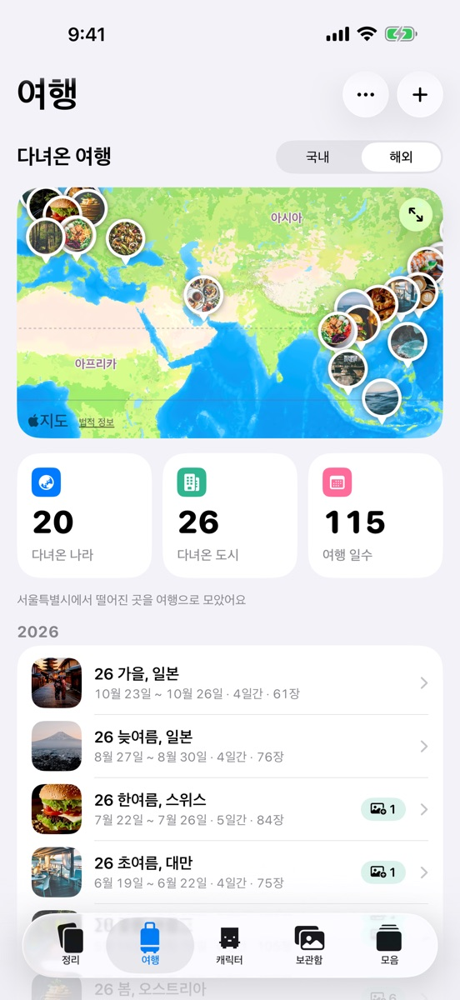
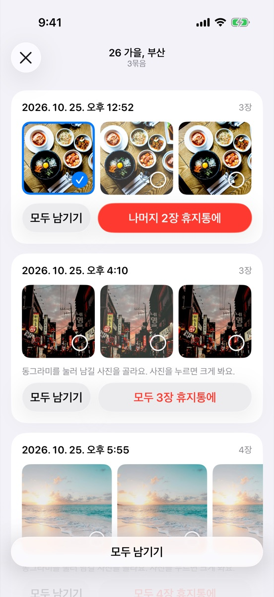
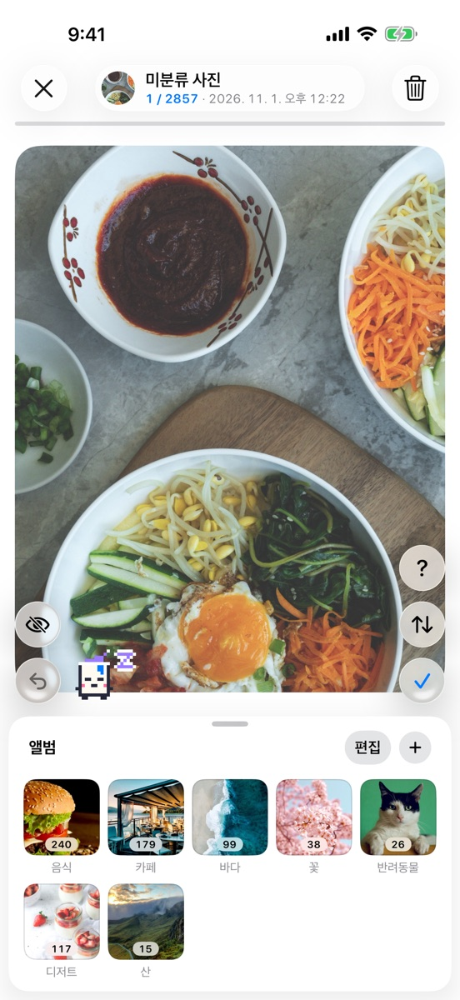
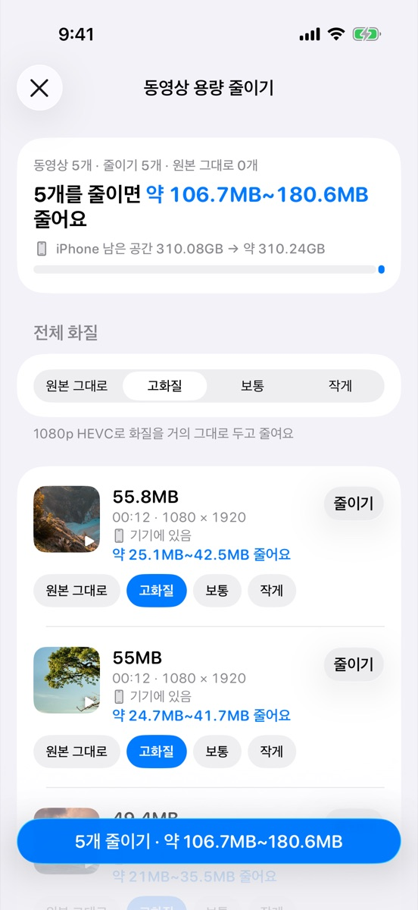
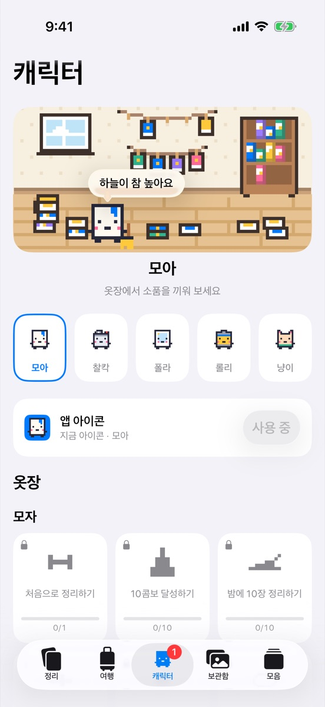
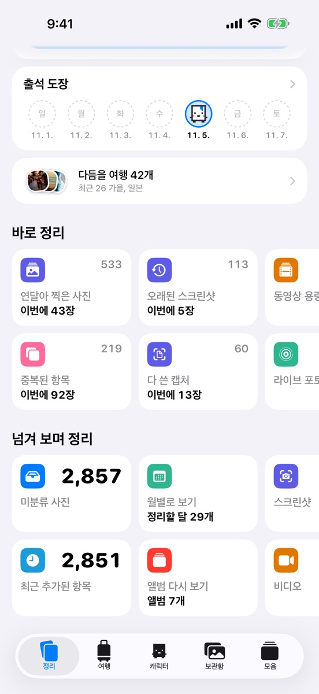
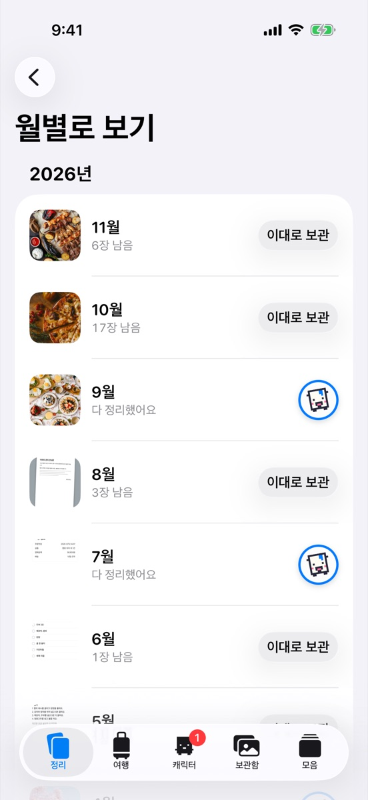
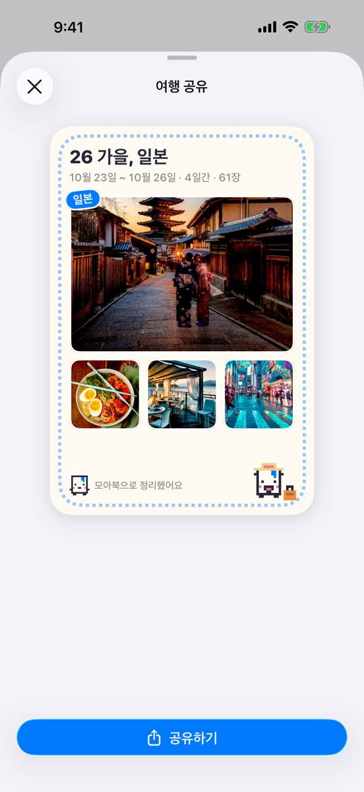
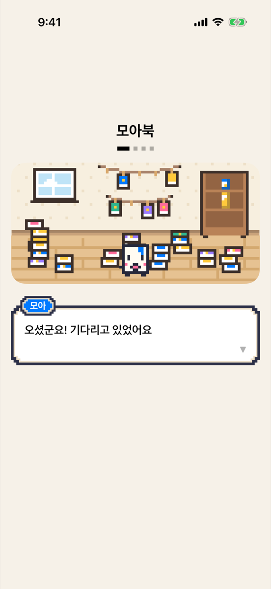

Moa為每次旅行建一個相簿吧
按旅行建立相簿
旅行照片混在日常照片和截圖之間。
根據拍攝日期和地點找出你去過的旅行，一鍵為每次旅行建立相簿。找到的旅行可以在地圖和列表中回顧。
Moa你好！今天先整理哪些照片呢？
照片越積越多，真要整理時卻不知道從哪裡下手。
從最近的一次旅行開始吧。只挑出相似的照片給你看。

Moa為每次旅行建一個相簿吧
旅行照片混在日常照片和截圖之間。
根據拍攝日期和地點找出你去過的旅行，一鍵為每次旅行建立相簿。找到的旅行可以在地圖和列表中回顧。

咔嚓相似的照片只挑一張吧
同一個場景拍好幾張，相簿很快就變得很長。
把旅行中的連拍照片和相似照片分組顯示。挑好要保留的，其餘的放進垃圾桶。

Pola邊滑邊一張張決定
一張張打開再刪除或加入相簿，太費工夫了。
滑動瀏覽時，往上推放進垃圾桶，點一下 ✓ 保留，放到下方相簿欄就加入該相簿。滑錯了也能馬上還原。

Rolly影片別刪，壓縮一下吧
儲存空間不夠，影片又捨不得刪。
為每個影片選擇畫質來壓縮，原況照片轉為靜態照片。會先顯示能省多少。

喵喵點我一下，我會說句話
照片就算整理過一次，很快又會堆起來。
角色標籤頁裡有你選的朋友住的像素房間。未整理的照片多，房間就亂糟糟的；越整理，朋友就越會收拾房間。
點一下朋友，它會從 121 句話中挑一句符合現在時間、季節和整理紀錄的話。完成挑戰就能獲得道具在衣櫥裡戴上，App 圖示也能換成你選的朋友。

把截圖、驗證碼之類用過的截圖、重複照片、文件和收據、原況照片、大影片按類型集中顯示。

逐月滑動整理剩餘照片，或用「保持原樣」一次完成整個月。完成的月份會蓋上完成章。

按地圖和日期回顧去過的旅行，製作包含旅行名稱、日期和照片的分享卡片傳送出去。
第一次打開時選一個朋友陪你。隨時可在角色標籤頁更換。
Moa你好！我是 Moa。翻頁的聲音很好聽吧？
